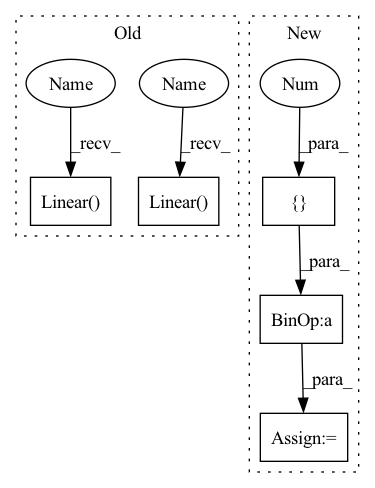

Pattern ID :474
Before Change
print(f"input dimentsions: {self.hidden_units}")
self.fc1 = nn.Linear(self.pose, self.hidden_units[0])
self.fc2 = nn.Linear( self.hidden_units[0], self.hidden_units[1])
self.fc3 = nn.Linear(self.hidden_units[1], self.hidden_units[2])
self.fc4 = nn.Linear( self.hidden_units[2], self.hidden_units[3])
self.fc5 = nn.Linear(self.hidden_units[3], self.hidden_units[4])
self.fc6 = nn.Linear(self.hidden_units[4], self.dof)
def forward(self, x):After Change
super().__init__()
self.hidden_units = [400, 300, 200, 100, 50]
self.dropout_ratios = [0.0 ] * 5
if trial is not None:
for i in range(0, 5):
self.hidden_units[i] = trial.suggest_int(In pattern: SUPERPATTERN
Frequency: 3
Non-data size: 5
Instances Fragment ID: 1375124
Project Name: youtalk/iknet
Commit Name: 492ac3f9080782b43c9961a321689afeed47805c
Time: 2021-05-03
Author: yutaka.kondo@youtalk.jp
File Name: iknet.py
M Class Name: IKNet
N Class Name: IKNet
M Method Name: __init__(2)
N Method Name: __init__(2)
M Parent Class: nn.Module
N Parent Class: nn.Module
M File Name: iknet.py
N File Name: iknet.py
M Start Line: 33
M End Line: 46
N Start Line: 33
N End Line: 49
Fragment ID: 1375126
Project Name: youtalk/iknet
Commit Name: 492ac3f9080782b43c9961a321689afeed47805c
Time: 2021-05-03
Author: yutaka.kondo@youtalk.jp
File Name: iknet.py
M Class Name: IKNet
N Class Name: IKNet
M Method Name: __init__(2)
N Method Name: __init__(2)
M Parent Class: nn.Module
N Parent Class: nn.Module
M File Name: iknet.py
N File Name: iknet.py
M Start Line: 33
M End Line: 46
N Start Line: 33
N End Line: 49
Fragment ID: 1375122
Project Name: karlxing/rlcodebase
Commit Name: 561244aab75e897c5193a9d6645339f20ecaf5b0
Time: 2020-08-15
Author: jinweixing1006@gmail.com
File Name: rlcodebase/model/model.py
M Class Name: CatACLinearNet
N Class Name: CategoricalActorCriticConvNet
M Method Name: __init__(4)
N Method Name: __init__(5)
M Parent Class: nn.Module
N Parent Class: nn.Module
M File Name: rlcodebase/model/model.py
N File Name: rlcodebase/model/model.py
M Start Line: 7
M End Line: 11
N Start Line: 32
N End Line: 37